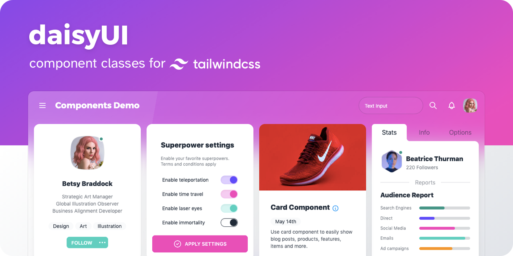

How to install Daisy UI with Tailwind CSS
Daisy UI is a collection of components and custom classes that can be easily used to rapidly create stunning websites. Daisy UI's secret is it's built using Tailwind CSS which provide out of the box support for easy customization of elements.

Install
1npm i daisyui
Add the following code to the tailwind.config.js file.
1module.exports = {
2 //...
3 plugins: [require("daisyui")],
4};
That's it! Daisy UI is framework agnostic so it can work anywhere Tailwind CSS works. If you need a guide on how to install Tailwind CSS for Svelte check out the guide below.